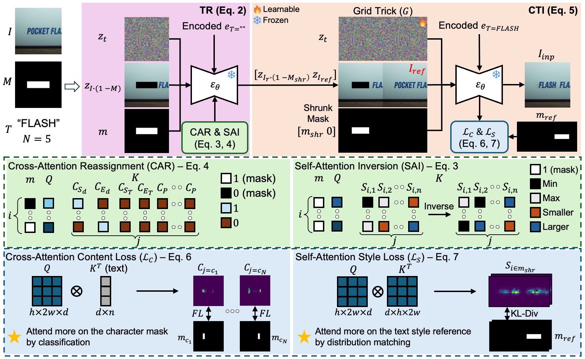

TACO-Zero: Zero-Shot Multi-Reference Compositional Video Editing
About Me#
I am a Ph.D. student at the Video and Image Computing Lab (VICLab) at KAIST, advised by Prof. Munchurl Kim. I received my B.S. in Electrical Engineering from the University of the Philippines Los Baños in 2018. Currently, my research focuses on controllable image and video editing using generative models. Outside of research, I enjoy street and portrait photography.
News#
-
Sep 2026MotionGrounder was accepted to NeurIPS 2026! See you in Sydney! 🇦🇺
-
Aug 2026PRIMEdit was accepted to IEEE TPAMI (IF: 20.4)!
-
Apr 2026
-
Jan 2026
Education#
-
Aug 2021 – PresentIntegrated M.S.-Ph.D. in Electrical Engineering Korea Advanced Institute of Science and Technology, Daejeon, South Korea
-
Jun 2013 – Jun 2018B.S. in Electrical Engineering, cum laude University of the Philippines Los Baños, Los Baños, Laguna, Philippines
Publications#
MotionGrounder: Grounded Multi-Object Motion Transfer via Diffusion Transformer
PRIMEdit: Probability Redistribution for Instance-aware Multi-object Video Editing with a New Benchmark Dataset

OmniText: A Training-Free Generalist for Controllable Text-Image Manipulation
* Equal Contribution · † Co-Corresponding Authors